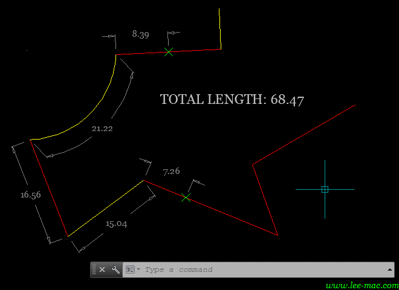

Chain Length
This page is delivered for consistency purposes only, as part of the LeeMac sample module of DynALisp, which shows how DynALisp turns existing AutoLISP programs into a module. The program and its description are the work of Lee Mac, who keeps all the credit for them. The original page, with the latest version, is on Lee Mac's website: https://lee-mac.com/chainlength.html
See also Chain Selection.
| Function Syntax | LM-ChainLength – original syntax: chainlen (see aliases) |
| Current Version | 1.0 |
| Compatible with AutoCAD for Mac? | No |
| Compatible with AutoCAD LT? | Yes |
| Original Page | lee-mac.com/chainlength.html |
Program Description
This program enables the user to calculate the total object length between two points along a chain of connected objects.
Upon issuing the command syntax chainlen at the AutoCAD command-line, the user is first prompted to make a selection of objects; this selection may consist of any set of open geometric objects, and may contain multiple chains of connected objects, or indeed, no connected objects. Following a valid selection, the user may then specify two distinct points located on any two objects in the selection, or with both points located on the same object.
The program will then proceed to calculate the total length along the series of connected objects between the two given points, and will print the result to the AutoCAD command-line. The printed length will be formatted in line with the current units & precision settings (i.e. dependent upon the values of the LUNITS & LUPREC system variables respectively).
A set of distinct objects will be considered a 'chain' if each endpoint coincides with the endpoint of another object in the selection, as shown by the demonstration below.
The user will be notified if the two given points do not lie on the same chain of objects in the selection.
Demonstration

See also Chain Selection.
Bundled program notes
;;-------------------------=={ Chain Length }==-------------------------;;
;; ;;
;; This program enables the user to calculate the total object length ;;
;; between two points along a chain of connected objects. ;;
;; ;;
;; Upon issuing the command syntax 'chainlen' at the AutoCAD ;;
;; command-line, the user is first prompted to make a selection of ;;
;; objects; this selection may consist of any set of open geometric ;;
;; objects, and may contain multiple chains of connected objects, or ;;
;; indeed, no connected objects. ;;
;; ;;
;; Following a valid selection, the user may then specify two ;;
;; distinct points located on any two objects in the selection, or ;;
;; with both points located on the same object. ;;
;; ;;
;; The program will then proceed to calculate the total length along ;;
;; the series of connected objects between the two given points, and ;;
;; will print the result to the AutoCAD command-line. The printed ;;
;; length will be formatted in line with the current units & precision ;;
;; settings (i.e. the LUNITS & LUPREC system variables). ;;
;; ;;
;; A set of distinct objects will be considered a 'chain' if each ;;
;; endpoint coincides with the endpoint of another object in the ;;
;; selection. ;;
;; ;;
;; The user will be notified if the two given points do not lie on ;;
;; the same chain of objects in the selection. ;;
;;----------------------------------------------------------------------;;
;; Author: Lee Mac, Copyright © 2015 - www.lee-mac.com ;;
;;----------------------------------------------------------------------;;
;; Version 1.0 - 2015-11-01 ;;
;; ;;
;; First release. ;;
;;----------------------------------------------------------------------;;
Command Names And Aliases
As in every DynALisp module, each program of this sample module has one main command, named LM-*, and the original command names of Lee Mac's page are kept as its aliases: they run the same command, and can be added, renamed or removed in Dyl-Suite (saved in Resources\Aliases.csv).
| Command | Aliases | Name |
|---|---|---|
| LM-ChainLength | CHAINLEN | Chain Length |